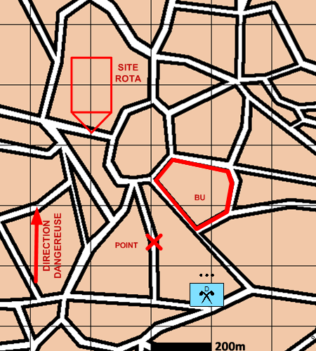

NIVEAU :Pion
ARME :NRBC
MISSION :Reconnaitre
Objectif principal
- Reconnaître
Modalités d'exécution
-
Mise en place des protections NBC
-
Progresser tactiquement et reconnaissance des objectifs
-
Lors de la reconnaissance de une zone ou un nuage NBC les mesures permettent de déterminer son niveau de danger
-
Tombe en garde à la fin de l'itinéraire
Schéma de modélisation

Paramètres obligatoires
Objectifs
Points :
Positions à reconnaître.
Zones :
Zones à reconnaître.
Blocs Urbains :
Blocs Urbains à reconnaître.
Sites ROTA :
Objets ROTA à reconnaître.
Paramètres optionnels
Direction Dangereuse
Lignes de coordination [LC]
Lignes de changement d'attitude [LCA]
Lignes de début et fin de mission[LDM/LFM]
Limite gauche / Limite droite